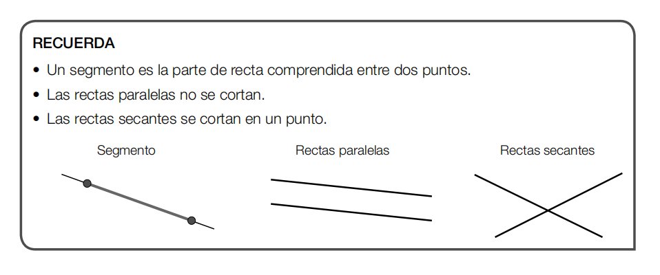
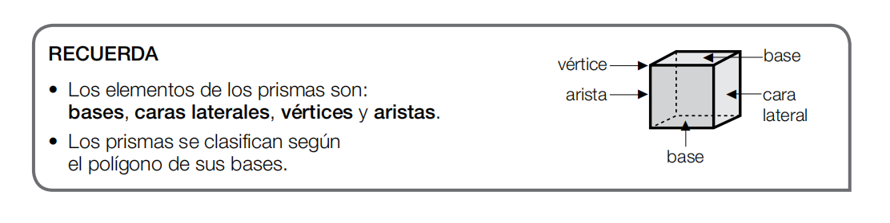

Unidad 1: Líneas y Segmentos / 单元 1：线段与直线类型

Un segmento es la parte de recta comprendida entre dos puntos.
线段是包含在两个端点之间的直线部分。
Las rectas paralelas no se cortan. Las rectas secantes se cortan en un punto.
平行线永远不会相交。相交线会在一个点上相交。
线段是包含在两个端点之间的直线部分。
Las rectas paralelas no se cortan. Las rectas secantes se cortan en un punto.
平行线永远不会相交。相交线会在一个点上相交。
Ejemplo / 实例：
Las vías del tren son como rectas paralelas, nunca se cruzan. Las calles que forman una cruz son rectas secantes.
火车的轨道就像平行线，永远不会交叉。形成十字路口的街道就是相交线。
Las vías del tren son como rectas paralelas, nunca se cruzan. Las calles que forman una cruz son rectas secantes.
火车的轨道就像平行线，永远不会交叉。形成十字路口的街道就是相交线。
Unidad 2: Polígonos y Triángulos / 单元 2：多边形与三角形

Según su número de lados, los polígonos se clasifican en: Triángulo (3 lados), Cuadrilátero (4 lados), Pentágono (5 lados) y Hexágono (6 lados).
根据边数，多边形可分类为：三角形（3条边）、四边形（4条边）、五边形（5条边）和六边形（6条边）。
根据边数，多边形可分类为：三角形（3条边）、四边形（4条边）、五边形（5条边）和六边形（6条边）。

El triángulo equilátero tiene los tres lados iguales. El triángulo isósceles tiene dos lados iguales. El triángulo escaleno tiene los tres lados desiguales.
等边三角形的三条边都相等。等腰三角形有两条边相等。不等边三角形的三条边都不相等。
等边三角形的三条边都相等。等腰三角形有两条边相等。不等边三角形的三条边都不相等。
Ejemplo / 实例：
Una señal de tráfico de "Ceda el paso" es un triángulo equilátero. Una pantalla de televisión o un libro son cuadriláteros (rectángulos).
“让行”交通标志是一个等边三角形。电视屏幕或书本是四边形（矩形）。
Una señal de tráfico de "Ceda el paso" es un triángulo equilátero. Una pantalla de televisión o un libro son cuadriláteros (rectángulos).
“让行”交通标志是一个等边三角形。电视屏幕或书本是四边形（矩形）。
Unidad 3: Circunferencia y Círculo / 单元 3：圆周与圆

La circunferencia es una línea curva cerrada. El círculo está formado por la circunferencia y su interior. Sus elementos principales son el centro, el radio y el diámetro.
圆周是一条闭合的曲线。圆是由圆周及其内部区域组成的。它们的主要元素包括：圆心、半径和直径。
圆周是一条闭合的曲线。圆是由圆周及其内部区域组成的。它们的主要元素包括：圆心、半径和直径。
Ejemplo / 实例：
Un anillo o un aro de baloncesto es una circunferencia (solo el borde). Una moneda o una pizza es un círculo (incluye el relleno).
一枚戒指或篮球框是圆周（只有边缘）。一枚硬币或一个披萨是圆（包含了内部的实体）。
Un anillo o un aro de baloncesto es una circunferencia (solo el borde). Una moneda o una pizza es un círculo (incluye el relleno).
一枚戒指或篮球框是圆周（只有边缘）。一枚硬币或一个披萨是圆（包含了内部的实体）。
Unidad 4: Prismas y Pirámides / 单元 4：棱柱与棱锥

Los elementos de los prismas son: bases, caras laterales, vértices y aristas. Los prismas se clasifican según el polígono de sus bases.
棱柱的几何元素包括：底面、侧面、顶点和棱。棱柱是根据其底面的多边形形状来分类的。
棱柱的几何元素包括：底面、侧面、顶点和棱。棱柱是根据其底面的多边形形状来分类的。

Los elementos de las pirámides son: base, caras laterales, vértices y aristas. Las pirámides se clasifican según el polígono de sus bases.
棱锥的几何元素包括：底面、侧面、顶点和棱。棱锥同样根据其底面的多边形形状来分类。
棱锥的几何元素包括：底面、侧面、顶点和棱。棱锥同样根据其底面的多边形形状来分类。
Ejemplo / 实例：
Una caja de zapatos es un prisma rectangular. Las famosas construcciones de Egipto son pirámides cuadrangulares (tienen un cuadrado de base).
一个鞋盒是一个长方体（矩形棱柱）。埃及著名的建筑是四角锥（它们的底面是正方形）。
Una caja de zapatos es un prisma rectangular. Las famosas construcciones de Egipto son pirámides cuadrangulares (tienen un cuadrado de base).
一个鞋盒是一个长方体（矩形棱柱）。埃及著名的建筑是四角锥（它们的底面是正方形）。
Unidad 5: Cuerpos Redondos / 单元 5：旋转体

Los cuerpos geométricos con superficies curvas se llaman cuerpos redondos. El cilindro, el cono y la esfera son cuerpos redondos.
带有曲面的几何体被称为旋转体（圆体）。圆柱体、圆锥体和球体都属于旋转体。
带有曲面的几何体被称为旋转体（圆体）。圆柱体、圆锥体和球体都属于旋转体。
Ejemplo / 实例：
Una lata de refresco es un cilindro. Un gorro de fiesta es un cono. Un balón de fútbol es una esfera.
一罐汽水是圆柱体。派对帽子是圆锥体。一个足球是球体。
Una lata de refresco es un cilindro. Un gorro de fiesta es un cono. Un balón de fútbol es una esfera.
一罐汽水是圆柱体。派对帽子是圆锥体。一个足球是球体。
Unidad 6: Perímetro y Área / 单元 6：周长与面积
El perímetro (P) es la suma de las longitudes de los lados de una figura geométrica (el contorno).
周长 (P) 是一个几何图形所有边长的总和（也就是外轮廓的长度）。
El área (A) es la medida de la superficie interior que ocupa una figura plana.
面积 (A) 是一个平面图形内部所占表面的大小。
周长 (P) 是一个几何图形所有边长的总和（也就是外轮廓的长度）。
El área (A) es la medida de la superficie interior que ocupa una figura plana.
面积 (A) 是一个平面图形内部所占表面的大小。
Símbolos / 符号说明:
l = lado (边长) | b = base (底边) | h = altura (高) | B = base mayor (下底) | r = radio (半径) | π ≈ 3.14
l = lado (边长) | b = base (底边) | h = altura (高) | B = base mayor (下底) | r = radio (半径) | π ≈ 3.14
| Figura / 图形 | Perímetro / 周长 (P) | Área / 面积 (A) |
|---|---|---|
| Triángulo (三角形) | Suma de los 3 lados (三边之和) | (b × h) / 2 |
| Cuadrado (正方形) | l × 4 | l × l (或 l2) |
| Rectángulo (长方形) | (b + h) × 2 | b × h |
| Trapecio (梯形) | Suma de los 4 lados (四边之和) | ((B + b) × h) / 2 |
| Paralelogramo (平行四边形) | Suma de los 4 lados (四边之和) | b × h |
| Círculo (圆形) | 2 × π × r | π × r2 |
Ejemplo / 实例：
Si tienes un jardín rectangular que mide 5 metros de largo (base) y 3 metros de ancho (altura):
如果你有一个长方形花园，长（底）5米，宽（高）3米：
- Para rodearlo con una valla, calculas el Perímetro: (5 + 3) × 2 = 16 metros de valla.
- 要用栅栏把它围起来，你需要计算周长：(5 + 3) × 2 = 16米的栅栏。
- Para plantar césped dentro, calculas el Área: 5 × 3 = 15 metros cuadrados (m2) de césped.
- 要在里面种草坪，你需要计算面积：5 × 3 = 15平方米 (m2) 的草坪。
Si tienes un jardín rectangular que mide 5 metros de largo (base) y 3 metros de ancho (altura):
如果你有一个长方形花园，长（底）5米，宽（高）3米：
- Para rodearlo con una valla, calculas el Perímetro: (5 + 3) × 2 = 16 metros de valla.
- 要用栅栏把它围起来，你需要计算周长：(5 + 3) × 2 = 16米的栅栏。
- Para plantar césped dentro, calculas el Área: 5 × 3 = 15 metros cuadrados (m2) de césped.
- 要在里面种草坪，你需要计算面积：5 × 3 = 15平方米 (m2) 的草坪。